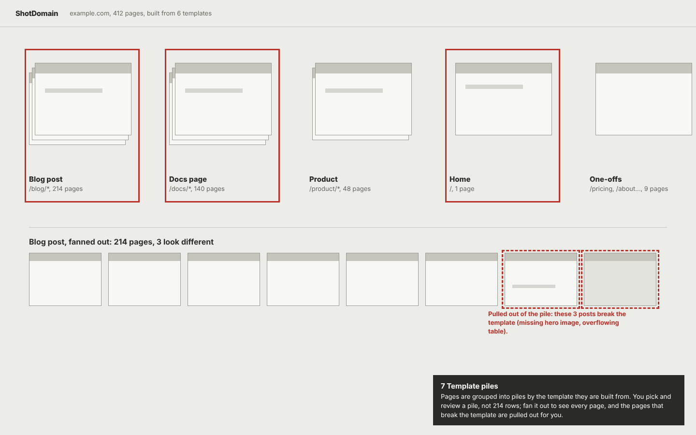
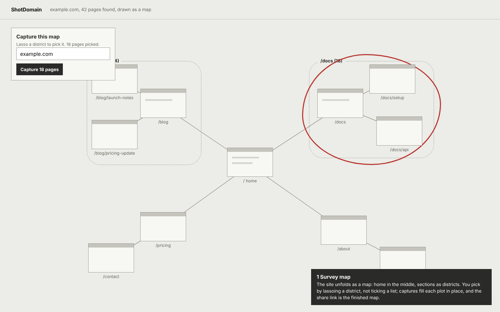
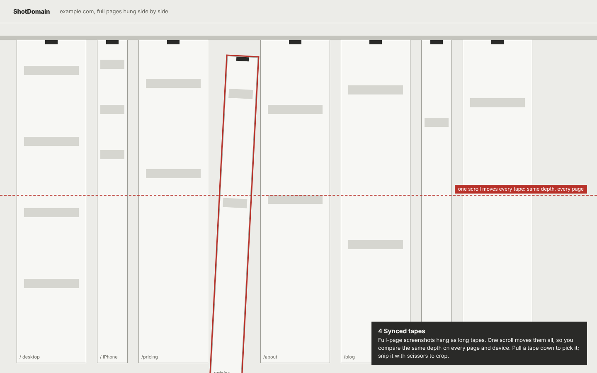
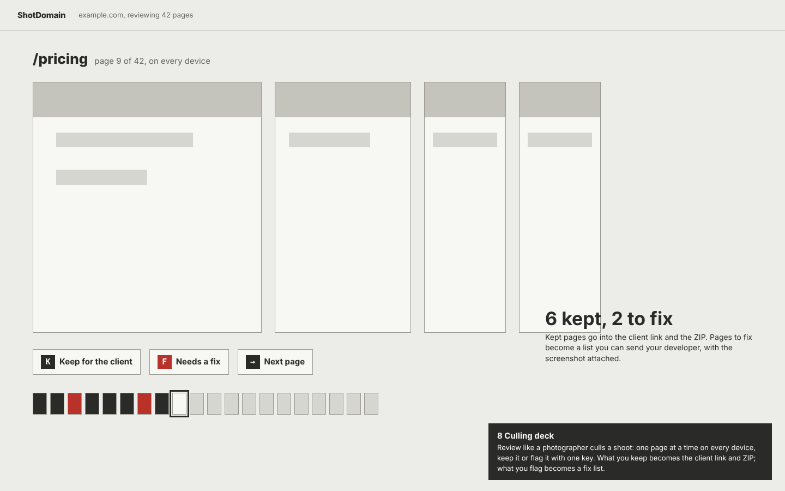
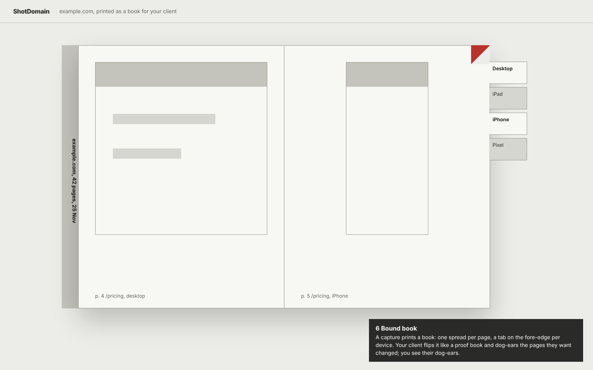
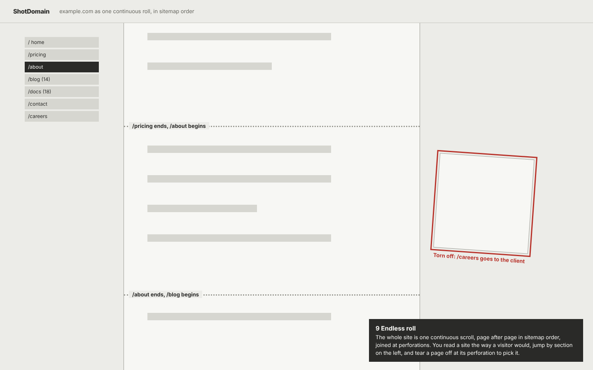
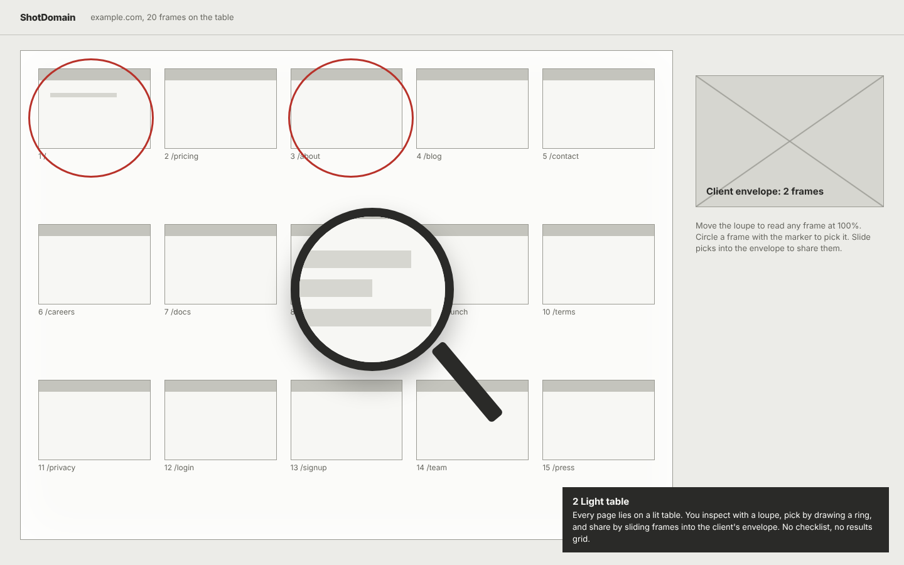
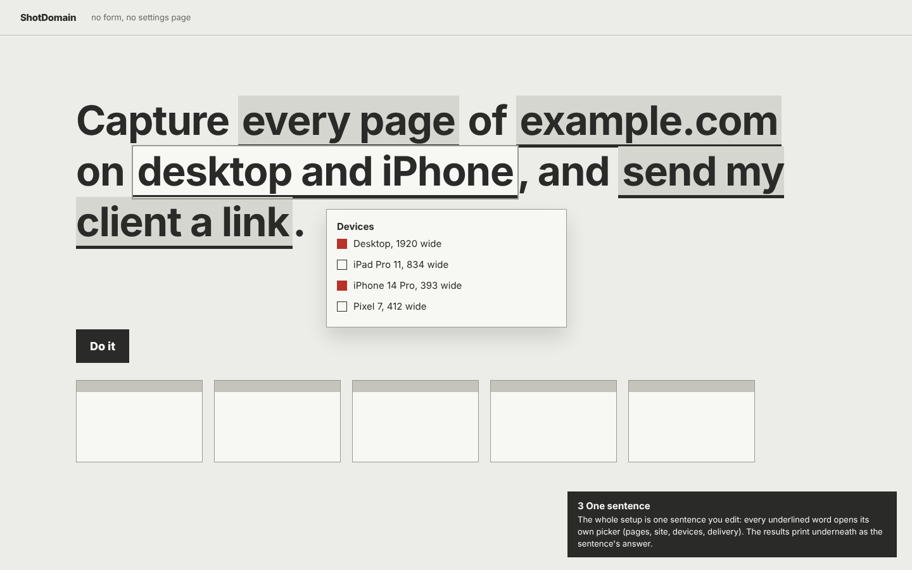
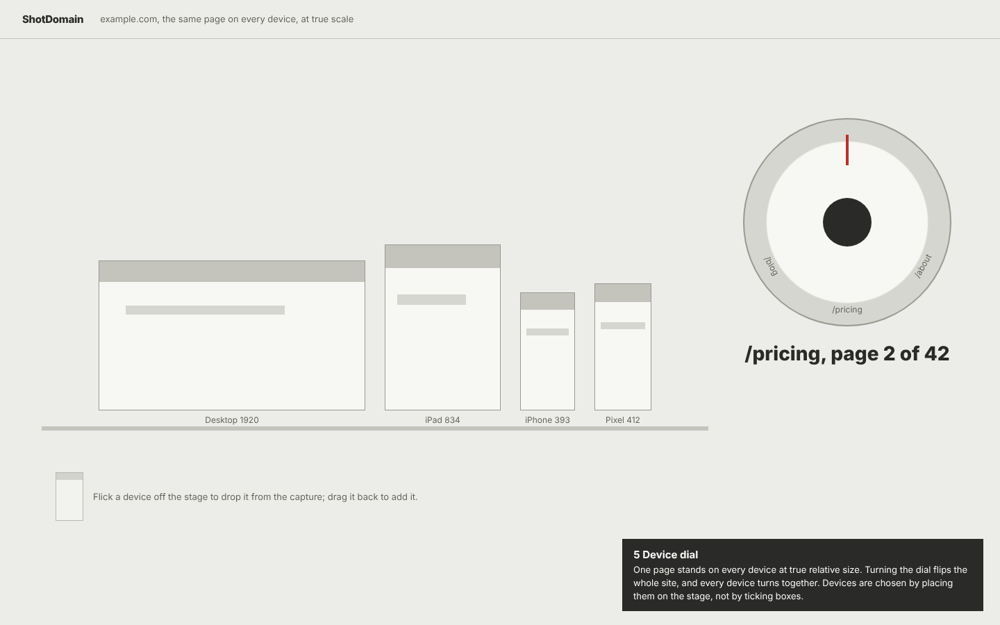

Rough grey sketches of mechanics, not looks. The ui-critic judged each one: has a designer seen it before, is it the standard layout under a skin, does every real function still fit, and does it work for a 400-page site. Three were the standard layout under a skin, so they were dropped and replaced.

Pages grouped into piles by template; you review a pile, and the pages that break the template are pulled out for you.
412 pages become 6 decisions. The detection must be real and right, or it misleads you.

The site as a map with sections as districts; lasso a district to pick it; captures fill each plot in place.
You see the shape of the whole site; picking three stray pages is slower than a list.

Full pages hang as tapes; one scroll moves them all, so you compare the same depth on every page and device.
The best way to spot a broken footer everywhere, but it only covers reviewing results.

One page at a time on every device; keep or flag with one key; kept pages become the link and ZIP, flagged a fix list.
The most honest checking tool, but it turns a quick download into a review session.

A capture prints a book, one spread per page, device tabs on the edge; your client dog-ears pages.
The most moving thing to send a client, but it is only the output, and page curls can look dated.

The whole site as one continuous scroll joined at perforations; tear a page off to pick it.
You read the site like a visitor, but finding one page or comparing devices is slow.

The current results grid with a loupe on top.

The settings form written inline; kept as a part for the hybrid.

A responsive-preview line-up; the spin is fun, moving around is slow.